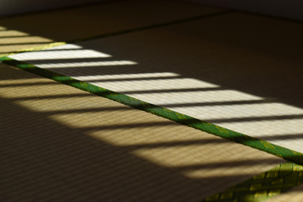
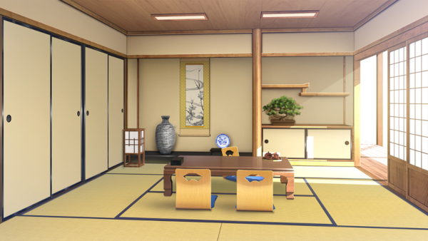

GM:ふろずん
メインログ /
雑談ログ
Character Sheet
PC1：暁月絢音 (キャラシート) PL：めい
PC2：猿曳松葉 (キャラシート) PL：タンゴ
PC3：神狩妃華 (キャラシート) PL：がぶらす
PC4：蛇ノ目衣葉 (キャラシート) PL：LISP
Index
◆Information◆
ステージ：奈良県梅結村
NPC紹介
◆Pre play◆
HO&PC紹介
◆Opening Phase◆
01 夢の終わり
02 あかいいと
03 極東の火薬庫
第2回目開始ポイント
Information
ステージ：奈良県梅結村
基本ステージ奈良県梅結村を舞台とする。
くわしくは、以下の情報を参照すること。
◆奈良県梅結村
奈良県の南端、山間部に位置する村落。その地名の通り、梅が特産品。
関西弁に似た”梅結弁”を話すが、最近は標準語で話している人も多い。
村は平和そのもので、オーヴァードとの衝突は一度も起こっていない。
大きな催しは、年越しの『正月枝舞』と共に打ちあげる花火くらいか。
細い海苔で飾り結びをした「梅結おむすび」が写真映えして人気だが、
見た目以外、ごく普通の梅おにぎりなので、地元民は誰も口にしない。
ちなみに夢皓支部長は、梅肉ソースをおもちにつけて食べるのが好み。
(好きが高じて、学校の屋上でお餅を焼いて怒られたという伝説を持つ)
◆梅結高校
暁月絢音、猿曳松葉、夢皓有栖、安黒うさぎが通っている高校。
歴史ある木造校舎が特徴で、校長はなにかと「古き良き」を持ち出す。
冷暖房設備がないため、夏は暑く、冬は寒い。
在校生徒は「古くていいからエアコンくらいつけろ」と抗議している。
なお、男子の制服は学ラン。女子の制服はセーラー服。
◆梅結神社
『年神さま』を祀る、歴史ある神社。
『紅の巫』の『正月枝舞』が有名。
また『門松』の語源とされる全長30mの神木が聳えている。
年末年始は非常に忙しく、初詣に来た参拝客達が殺到する。
◆UGN梅結村支部
三年前に新設された小さな支部。
梅結神社の社務所を使っている。
所属しているのは、暁月絢音、猿曳松葉、夢皓有栖、安黒うさぎ、桐生緋依の計5名。
梅結村自体が平和であるため、これといった任務は無い。ほとんど部活感覚。
お仕事がないときは、巫女の恰好に着替えて、梅結神社の手伝いをしている。
(なお安黒うさぎは、巫女の仕事を拒否している)
◆年神
梅結神社で祀っている神様。
この現代日本において、最も広く信仰されている神の一柱。
すっかり形骸化しているが、正月の行事は全て、この神を迎えるためのもの。
NPC紹介
※ステータス評価※
[S]隔絶(戦闘能力では、プライメイトオーヴァード等が該当)
[A]卓越(戦闘能力では、マスターエージェント等が該当)
[B]優秀(戦闘能力では、支部のエースクラス等が該当)
[C]オーヴァード標準
[D]一般人並
[＋/－]以上/未満
 “デイドリーム” 夢皓 有栖
[シンドローム]不明
“デイドリーム” 夢皓 有栖
[シンドローム]不明
[運動能力]D- [戦闘能力]D-
[思考能力]B [戦術指揮]S
「ふふ、お姉ちゃんは何でも知っているのですよ」
暁月絢音のお姉ちゃんを自称するUGN梅結村支部長。
器用に見えて不器用。大和撫子に見えて不良生徒。
学校では授業をサボって昼寝しているコトが多い。
絢音の自由を奪う神社の因習に嫌悪を抱いており、
みんなと”普通の日常”を過ごすコトを望んでいた。
実際、絢音や松葉にとって日常の象徴だったが……
 “ヴォーパルバニー” 安黒 うさぎ
[シンドローム]ブラックドッグ/サラマンダー
“ヴォーパルバニー” 安黒 うさぎ
[シンドローム]ブラックドッグ/サラマンダー
[運動能力]A- [戦闘能力]A-
[思考能力]D- [戦術指揮]C
「そんなんじゃ、いつまでたっても半人前よ」
暁月絢音と猿曳松葉の戦闘の師匠にあたる、UGNエージェント。
愛称は『クロウサ』。キツめの性格だが、面倒見はいい。
単独で支部ひとつに相当する戦闘能力を持っているとか。
なお皆にバレないようにしているが、学力はかなり低い。
“エンプレスツリー” 桐生 緋依
[シンドローム]ソラリス/オルクス
[運動能力]D+ [戦闘能力]D+
[思考能力]C+ [戦術指揮]C+
「夢皓支部長……わたしは……」
神狩妃華のおっとりした旧友。UGN梅結村支部の臨時支部長。
かつてはUGNホワイトハンドで医者として活動していた。
FHに傷付けられた人々を救う事ができなかった経験から、
ひとりの犠牲も出さず、梅結村支部を率いる夢皓支部長を慕っていた。
なおカンタンな回復と幻覚のエフェクトを使えるが、戦闘能力はない。
妃華と交換したブローチをいつも大事に身に着けている。
 “ワンダーアキュート” 河合 由佳
[シンドローム]ブラックドッグ/モルフェウス
“ワンダーアキュート” 河合 由佳
[シンドローム]ブラックドッグ/モルフェウス
[運動能力]D [戦闘能力]D
[思考能力]B- [戦術指揮]B-
「かわゆいか？ 河合由佳！ ただいま参上っす！！」
神狩妃華の後輩。UGN本部から同行してきたノリの軽い新人オペレーター。
レネゲイド知識が豊富で状況把握能力が高いが、戦闘能力は一般人並。
そのおかげか、市民感情や現場意見を重視している模様。
“ジャバウォック”
[シンドローム]ウロボロス/ブラム=ストーカー
[運動能力]B [戦闘能力]B～A
[思考能力]B [戦術指揮]B
「あっしは金勘定ばかり得意な、しがない傭兵ですぜい」
UGN梅結村支部の一大事に雇われた傭兵。
金さえ貰えれば何でもすると嘯いており、
どことなく軽薄な空気を持つ細身の大男。
“プランナー” 都築京香
[シンドローム]不明
[運動能力]不明 [戦闘能力]不明
[思考能力]不明 [戦術指揮]不明
「プランは第一段階の成功を確認。さあ、次のステップに移りましょう」
蛇ノ目衣葉を梅結村に導いた、ゼノスのリーダー。
表向きはUGNに協力する姿勢を示しながら、やっぱり裏はあるようで？
Pre play
HO&PC紹介
GM :
プレイヤーのみなさま、お集まりいただきありがとうございます！
GM :
まずプリプレイ！
GM :
PLによるPC紹介から、始めていこうと思います！
GM :
はじめにPC①、自己紹介をお願いします！
暁月 絢音 :
はい！！

暁月 絢音 :
暁月絢音、平安時代から続くオーヴァードの家系・暁月家に生まれた16歳の女子高生です！
暁月 絢音 :
梅結神社の神楽・正月枝舞を執り行う巫女・紅の巫で、遺産の木刀・紅梅と生まれた時から契約しています！
暁月 絢音 :
紅梅の代償で梅結村の外へ出ることが出来ません！ この代償は紅梅を次の紅の巫に渡しても継続されるようなので、一生村で暮らす運命です！ かわいそう！！
暁月 絢音 :
そんなHO設定とは関係なく《異形の痕》で黒い狐の耳と尻尾が生えるんですが、暁月家は異形のオーヴァードを嫌悪しているので親戚からはめちゃ嫌われています！
暁月 絢音 :
なので紅の巫として認めてもらうために、歴代の巫女よりも正月枝舞の稽古を頑張ってきました！
暁月 絢音 :
頑張った甲斐あって、というか非戦闘用のデータなら自前の経験点使っても良いルールだったので、〈芸術：正月枝舞〉の技能レベルは脅威の30になっています！
暁月 絢音 :
ですが正月枝舞本番はまだ未経験だし、先代紅の巫の母親にはまだ遠く及ばないと思っているし、自分が親戚から認められてないのもあって全然自信を持てていません！
暁月 絢音 :
そんな自信の無さを隠すようにクール振った不愛想な態度を取っています！
暁月 絢音 :
でも内心ではHOロイスの有栖ちゃんのことは初めて出来た友達として好きだし、UGN梅結村支部のみんなのことも大切に思っているよ！
暁月 絢音 :
あとは能力的には、シンドロームは紅梅と同じバロール/オルクスの白兵型！
暁月 絢音 :
《孤独の魔眼》で範囲攻撃の対象を自分だけに変更したり、《妖精の手》で振り足ししたり、紅梅の効果でEロイスを解除したり色々します！
暁月 絢音 :
ただその分、攻撃面は装甲無視も範囲攻撃もないし、攻撃力も他のPCに比べると控えめです。
暁月 絢音 :
一応100%を超えると一回だけ《トップオブワールド》でクリ値を下げて攻撃出来るので、多分そこでEロイス解除分の仕事位は出来るでしょ……！ って思ってます。
暁月 絢音 :
以上、纏めると「色々やるバロオル白兵型でクールっぽいけど内面よわよわ代償重すぎ遺産継承者舞いガチ勢狐耳尻尾巫女」です！ よろしくお願いします！
GM :
頑張り屋さんでかわいいね！ よろしくおねがいします！
GM :
そんな絢音ちゃんのHOはこちら！
◆PC1用ハンドアウト◆
ロイス：夢皓有栖
カヴァー/ワークス：巫女/指定なし
あなたは『正月枝舞』という神楽のために、
その生涯を捧げる『紅の巫』と呼ばれる巫女だ。
お役目のために、幼い頃から独りで過ごしてきたが、
今から三年前、UGN支部長の「夢皓有栖」と出会い、
また彼女が連れてきたPC②や「安黒うさぎ」といった友人もできたことで、
あなたの日常は、遅咲きながら確かに花開いていた。
だが、紅の巫としての修行が忙しくなる時期、クリスマスパーティーの翌日。
あなたは、ある絶望的報せを聞くことになる。
※このハンドアウトを選んだPCは「Dロイス：遺産継承者:紅梅」を取得する。
◆PC1専用アイテム◆
『紅梅』
種別：白兵 技能：<白兵> 命中：-1 攻撃力：12 ガード値：1 射程：至近
購入/常備化：購入不可/不可
解説:古き神を封じたとされる、EXレネゲイドの木刀。
巫の血を宿した人間のみ、契約を行なう事ができる。
『正月枝舞』を舞う際、これは祭具として振るわれる。
臨戦状態に入った時、バロール/オルクスの力によって、
契約した対象のレネゲイドを纏い、自ら刀身を作り出す機能を持つ。
(例:契約した人間がブラックドッグの場合、雷の刃が作りだされる。)
この武器による攻撃で1点でもダメージを与えた場合、
対象が使用して効果が持続しているEロイスひとつを解除できる。
ただし、GMが許可しない限り解除はできない。
代償:契約者は梅結市から外に出ることが出来ない。侵蝕率基本値に+4する
GM :
つづいてPC②、自己紹介をお願いします！

猿曳 松葉 :
猿曳 松葉、16歳高校1年！
大阪弁のヘラヘラ少女！
村の老人たちから猿松(≒悪ガキ)と呼ばれるくらいのヤンチャ。
もっぱら山に行って遊ぶタイプです。
猿曳 松葉 :
一方で、4年前のクリスマスに両親をFHに殺されたため、FHへの憎悪と家族に対する執着があります。
今の梅結支部は家族同然で守りたい気持ちが強いです。
猿曳 松葉 :
シンドロームはハヌマーン/エグザイルで、猿のように森の木々を駆け巡ったり、四肢と口を使った曲芸的な弓術を使えます。
対オーヴァード戦では神社からパチった……もとい無断で借りている松籟十二束という特別な矢を使います。
年神さまパワーが込められたすごい矢だ！
データ的には複数体射撃型。
《マシラのごとく》の一発火力もあります。
猿曳 松葉 :
以上！
GM :
家族、今度は守れるといいね……
猿曳 松葉 :
おっ、そうだな
GM :
そんな松葉ちゃんのHOはこちら！
◆PC2用ハンドアウト◆
ロイス：安黒うさぎ
カヴァー/ワークス：指定なし/UGNチルドレン
あなたは過去、FHに家族を奪われたことがあるUGNチルドレンだ。
身寄りをなくしたあなたは、UGN支部長の「夢皓有栖」に拾われ、
戦闘の師匠「安黒うさぎ」とPC①の四人で、新たな生活を始めた。
それから三年。12月25日。雪が降りしきる運命の夜。
仮初の家族は再び、あなたの目の前から消えてしまうことになる。
猿曳 松葉 :
守れてないやんけー！！
GM :
即オチ2コマ過ぎる
GM :
ともあれPC③、自己紹介をお願いします！
神狩 妃華 :
へいへい！
神狩 妃華 :
HO3、神狩 妃華さん(26)です！
表の顔で新米弁護士を務める傍ら、UGN本部は遺物探索局にてテレーズ・ブルムの下働いております！
神狩 妃華 :
一般家庭で生まれ育ちましたが、放火による火災で命を落とした際に覚醒、UGNに保護されました！ハンドアウトロイス桐生緋依とはその時からの付き合いでございます
神狩 妃華 :
よく抱かれる第一印象は実直で、実際ストレートな性格をしているわよ
嘘が全くつけないとかではないのでご安心です
神狩 妃華 :
戦闘時には体の各所から炎が噴き出してまるで花みたいになるぜ
戦闘スタイルはゴリゴリの近接！炎の爪で爆殺します
神狩 妃華 :
何かの事故でHPが3以下になったら笑ってやってください
ともども腹を切って詫びます
神狩 妃華 :
人を褒めたり罰したり、酒が好きだったり手が大きいことがちょっとコンプレックスなお姉さんをよろしくな！以上です！！
GM :
よろしくおねがいします！ 真っ直ぐな大人として、他PCを引っ張っていってほしいね！
GM :
そんな妃華ちゃんのHOはこちら！
◆PC3用ハンドアウト◆
ロイス：桐生緋依
カヴァー/ワークス：UGN本部エージェント/指定なし
あなたは中立派か穏健派のUGN本部エージェントだ。
UGN本部技術顧問「アスクレピオス」の依頼を受け、
あなたは後輩の「河合由佳」と共に梅結村を訪れた。
曰く、この村のどこかには”大量破壊兵器”のようなものが眠っており、
穏健派と改革派の間で、陰謀が渦巻いているらしい。
だが、そんなことは関係ない。
旧友の臨時支部長「桐生緋依」と協力し、依頼を完璧にこなすだけだ。
GM :
なお実際に依頼するのは、上司のテレーズちゃんということになりました！
GM :
さいごにPC④、自己紹介をお願いします！
蛇ノ目 衣葉 :
は～い！

蛇ノ目 衣葉 :
蛇ノ目衣葉、ゼノス所属のレネゲイドビーイングでクールビューティー女子高生名探偵を自称する全身黒インナーの不審者です。
蛇ノ目 衣葉 :
一年前の面影島事件のときに大量発生した黄泉還りの中の一体で、事件後は普通に消えるはず……だったがなぜか消えずに現在に至ります。
蛇ノ目 衣葉 :
パっと見大人びた雰囲気はあるけど雰囲気だけで、良くも悪くも年相応に好奇心旺盛な性格。任務よりも自分の興味を惹かれる事件に首を突っ込むこともしばしば。
蛇ノ目 衣葉 :
シンドロームはエグザイルのピュアで、バラバラ殺人事件で殺された経歴があるので身体をバラバラにするのが得意！！
蛇ノ目 衣葉 :
戦闘時は体中に付いたジッパーを切り離して腕を伸ばして攻撃するという、ブチャラティとだいたい同じ戦い方をします。
蛇ノ目 衣葉 :
一応探偵なので、PC4らしく戦闘も情報もそこそこにこなせるタイプです。
蛇ノ目 衣葉 :
以上！ よろしく頼む！（フリー音声）
GM :
よろしくおねがいします！ PC④は唯一の他組織枠になるので、頑張ってほしいですね！
GM :
そんな衣葉ちゃんのHOはこちら！
◆PC4用ハンドアウト◆
ロイス：ふしぎな白猫
カヴァー/ワークス：指定なし/ゼノスレネゲイドビーイング
あなたはゼノスに所属するレネゲイドビーイングだ。
「都築京香」から指令を受け、UGNに協力するために梅結村を訪れた。
進化に必要と言っていたが、彼女の真意ははたして……
それはそれとして、UGN梅結村支部はどこだろうか？
迷子のあなたを導いたのは、どこからか姿を現した「白い猫」だった。
GM :
それでは無事、全員の自己紹介が終わったところで、メインプレイに移っていきます！
Main play
Scene01 夢の終わり
GM :
まずオープニングフェイズ。
GM :
最初のシーンはマスターシーンになります。
GM :
令和五年 十二月二十五日 午前零時零分 梅結村住宅街
GM :
──────神々の坐す国、大和。
GM :
その辺境、梅の香る村落にて。

夢見る少女 :
「嗚呼、ごめんなさい……」
GM :
ひどく静かな夜だった。
GM :
ひらりはらり、花弁のごとき淡雪が舞い散る中。
GM :
ひとりの女が、背中から血を流して倒れていた。
夢見る少女 :
「ごめんなさい……絢音ちゃん……」虚ろな目で呟く。
GM :
……薄く降りつもった白い雪が、
GM :
その少女から流れ出す紅い血に、命の熱に融けていく。
GM :
白い少女はそんな自らの最期を、
どこか他人事みたいに、ぼんやり俯瞰して眺めていた。
GM :
少女は聡明であった。だからこそ、分かっていたのだ。
GM :
……自分は、もう助からないと。
GM :
走馬灯というやつだろう。
人生で最高に楽しかった三年の記憶が、瞼の裏に甦る。
GM :
村から出られない『妹』の為に、
海遊びをするかわりに、みんなで裏山で川遊びしたり。
GM :
ある日、いきなり松葉ちゃんが弓矢で獣を狩ってきて、
とばっちりで、猟師さんから怒られたりもした。
GM :
────どれもかけがえのない、大切な思い出だ。
みんなにとっても、そうだったのなら嬉しいのだけど。
夢見る少女 :
「それから、絢音ちゃんに初めて会った時……わたくしは────」
夢見る少女 :
「わたくし、は……」
GM :
少女にとって、臨死体験は一度や二度ではない。
GM :
死はずっと、あるいは生より身近にあったもの。
GM :
……ゆえにこそ、
少女はこれまで、死を恐れたコトなど一度もなかった。
夢見る少女 :
「約束、したのに……」
GM :
けれども今はどうだ。
GM :
知ったつもりで何も知らなかった『本物の死』。
GM :
その手触りを初めて知った少女の指先は、
GM :
恐怖に凍てついて、震えてしまっていた。
夢見る少女 :
「この期に及んで、我ながら往生際の悪い……」自嘲する。
GM :
死の覚悟は、もうとっくに済ませたつもりだったのに。
GM :
『運命』なのだと、受け入れていたつもりだったのに。
GM :
後悔はないが、心残りならば山程あったらしい。
GM :
少女は……
『夢皓有栖』はどうも、失うものが増えすぎた。
GM :
ひゅうひゅう。
GM :
まわりが静かだから、自分から漏れる吐息がうるさかった。
GM :
息苦しくって、ラクになりたくて、雪の上で仰向けになる。
夢見る少女 :
「はぁ……はぁ……」
GM :
夜空には暗雲が広がっていて、星のひとつも見えやしない。
GM :
雪が降っているのだから当然、
GM :
─────当然、何も見えないはずなのに。
GM :
霞んでいく視界の向こう側に、見えるはずのない星を見た。
GM :
まっすぐ夜空に伸びた、赤い糸のような光の帯。
GM :
みんなと見ることができなかった年始の花火に似たあれは、
GM :
あれはきっと…………
夢見る少女 :
「ふふ、そう……そうですか……」
GM :
掠れた声で誰にともなく、虚空に呟いて。
GM :
ただ夢中で祈るように、赤い星へと手を伸ばす。
GM :
その手は何処にも届かないと知っていて、なお。
夢見る少女 :
「わたくしのような……地獄に堕ちるべき”魔女”には、これ以上ない……」
GM :
そうして、何を思ったのか、少女は微笑んで……
GM :
眠りに落ちるよう、その目を閉じた────────
GM :
シーン終了。
Scene02 あかいいと
GM :
登場PCは暁月絢音と猿曳松葉！ 登場侵蝕をどうぞ！
暁月 絢音 :
はい！
暁月 絢音 :
1d10+38(1D10+38) ＞ 2[2]+38 ＞ 40
猿曳 松葉 :
34+1d10(34+1D10) ＞ 34+1[1] ＞ 35
梅結神社 武道場

GM :
令和五年 十二月二十四日 午後五時零分 梅結神社
GM :
────時は遡り、夢皓有栖の死から七時間前。
GM :
俗世の喧騒から離れた、ある辺境の神社にて。
GM :
境内の西方に位置する武道場。その古びて赤茶けた畳の上で。
GM :
二人の少女が、それぞれ刀と弓を構えていた。
GM :
名を暁月絢音。猿曳松葉。
齢十六にして、いずれも「新星」と呼ぶに能う強者であった。
GM :
相対するのも、また少女。
GM :
身の丈、五尺もないだろう小さき女であった。
GM :
白と黒。身の丈ほどある二本の大剣を携えて、対峙する二人を睨みつけている。
GM :
────数の上では、二人の有利。
GM :
だが、あなたたちは知っている。
GM :
……この小さき女。こう見えて、多勢に無勢をものともしない一騎当千の猛者！
小柄な少女 :
「お手並み、拝見」
GM :
小柄な少女は「コンボ：ラビットチェイン(コンセントレイト＋アームズリンク＋アタックプログラム＋エレキフィールド)」を使用！
GM :
18dx7+11+12-5 クロウサの命中判定(18DX7+18) ＞ 10[1,1,1,1,4,4,5,6,6,7,7,7,8,9,10,10,10,10]+10[1,2,3,3,4,5,5,8,8]+10[2,8]+4[4]+18 ＞ 52
GM :
暁月絢音は〈白兵〉、猿曳松葉は〈射撃〉で判定をお願いします！
GM :
目標値は52！ エフェクトの使用も可能です！
あくまでフレーバー程度の判定になるので、今回のエフェクト使用では、侵蝕上昇も使用回数消費もナシ！ 全力でどうぞ！
暁月 絢音 :
ありがたいね、それなら全力出せるやつだ！
暁月 絢音 :
じゃあ《ディストーション》《瞬速の刃》《コンセントレイト》を使用していきます！
暁月 絢音 :
7dx7+4(7DX7+4) ＞ 10[3,3,6,6,6,10,10]+10[1,8]+2[2]+4 ＞ 26
猿曳 松葉 :
【舞射ち】
CR+踊る髪
猿曳 松葉 :
3dx8+9(3DX8+9) ＞ 6[1,1,6]+9 ＞ 15
暁月 絢音 :
分かってたけど全然だめだよ！ 使用回数減らないからせっかくだし《妖精の手》も使ってみようかな
GM :
どうぞどうぞ！
暁月 絢音 :
1dx7+30+4(1DX7+34) ＞ 5[5]+34 ＞ 39
暁月 絢音 :
だめでした！
GM :
二人とも失敗！では描写！！
GM :
ツインテールの少女は、ダダダダンと畳を蹴ると天高く跳びあがり。
GM :
生物の死角、上空から強襲を仕掛ける！
GM :
小柄な少女の膂力から軽々と振り下ろされる、二振りの大剣。
GM :
正面で受けるのは無謀、となれば躱すか切り返すしかないが────
暁月 絢音 :
「はあっ！！」 梅の花弁が刀身に集まり、真っ赤に染まった木刀で切り返す！
猿曳 松葉 :
「容赦なさすぎやろっ……！」
ひらりとバク転し、そのまま反動をためて腕の力で飛び上がる。
猿曳 松葉 :
「次はマツバが上や！」
右手で道場の梁にぶら下がったまま、右足と左手で弓を構えて矢を幾本か浴びせる。
小柄な少女 :
「なるほど……初めて稽古をつけた三年前よりも、随分と良い動きをするようになった……」
小柄な少女 :
「けど……！！」
GM :
松葉の後退を見るや否や、すぐさま少女は絢音ひとりに狙いを定めた。
GM :
切り返してきた木刀……『紅梅』を大剣で強引に叩きおとし……。
GM :
更には、その切っ先を踏みつけて身動きを奪う。
暁月 絢音 :
「あ……っ」 相手を見上げる
GM :
少女はすでに、絢音の懐に潜り込んでいる。松葉の援護射撃は望めようもない。
小柄な少女 :
「まず一人」
猿曳 松葉 :
「ごめんあやねんどいてー！ 師匠狙えんわ！」
GM :
その言葉が届くよりも早く、もう一振りの大剣を横薙ぎに一閃。
GM :
木刀を奪われてしまった絢音には今、身を守る術が────
暁月 絢音 :
「あぐっ……！？」 刀身に集まっていた梅の花弁……バロールの魔眼を血のように散らせながら吹っ飛ばされる！
小柄な少女 :
「それからマツ」絢音が吹き飛ぶ様子を、横目で眺めながら話しかける。
小柄な少女 :
「……標的に目を囚われすぎるなって、言ってるわよね？」
猿曳 松葉 :
「……こらあかんわ……ん？」
状況の不利を察し、距離をとるための反動をつけようとする
GM :
松葉が距離を取ろうとした次の瞬間。死角から飛んできて何かが、その頭部にブチ当たる。
GM :
がつんと頭部を揺さぶられた松葉は、道場の梁から打ち落とされた。
猿曳 松葉 :
「うきゃ───！？！？」
ボテッ、と鈍い音を立てて、畳に大の字で激突する
GM :
同時、松葉のとなりに何かが転がる。
GM :
……あなたの水筒だ。
少女はブラックドッグ能力の磁力操作によって、金属の水筒を操り、あなたに当ててみせたのだ。
猿曳 松葉 :
「セコいわそんなん……がくぅ」
わざわざ口に出して崩れる。
小柄な少女 :
「……二人、猿も木から落ちるってね」
小柄な少女 :
「ふう、二人とも、まだまだ甘いわ」
小柄な少女 :
「戦いに正々堂々も何もないのよ？」乱れた黒髪をかきあげる。
GM :
彼女は安黒うさぎ。あなたたちの戦いの師匠だ。
GM :
こと戦闘において、彼女はあなた達を凌駕する。
GM :
単独で支部ひとつに相当する、といった噂があるが、
GM :
あながち、ウソとも言い切れないのが怖いところだ。
暁月 絢音 :
「いったぁ……。あんたが強すぎるだけでしょ、うさぎ……」壁に寄りかかりながら
猿曳 松葉 :
「手加減！手加減してえや！」
大の字のまま、口を尖らせる。
安黒 うさぎ :
「あんたたちの言い分、もし敵が本気で殺しに来たら、同じことを言ってみる？」
猿曳 松葉 :
「せやけど、ボコボコにされるだけやったら練習ならんて〜」
暁月 絢音 :
「……敵って言われても、ね。その敵と遭ったことないんだけどな、わたし」
暁月 絢音 :
「ずっと思ってるけど、わたしこの訓練に付き合う必要ある？」 面倒そうに言う。松葉と違って戦闘訓練へのモチベがない
GM :
絢音の言う通り、梅結村は平和そのもの。
GM :
FHとの戦闘は勿論、事件らしい事件が起きたコトもない。
GM :
こんなに熱心に、戦闘訓練を積む必要はあるのだろうか。
猿曳 松葉 :
「せやせや。あやねんのカワイイお顔にキズついたらどうしてくれんねんな〜。な〜、あやねん。」
復活して、絢音の頭をもしゃもしゃ撫でる。
暁月 絢音 :
「ちょ、ちょっと、やめて……」嫌がるように言うが、あまり抵抗はしてない
安黒 うさぎ :
「……ふん、傷の舐めあいは結構だけどね」
安黒 うさぎ :
「仮にだけど、もしあたしが裏切ったらどうするの？」
安黒 うさぎ :
「それだけで、この支部は壊滅よ？」
暁月 絢音 :
「何その想定。意味分かんないんだけど……」
猿曳 松葉 :
「え、裏切んのん師匠？ 終わりやん」
まるで今から裏切りますと言われたかのような反応。
仮定が苦手なのだ。
安黒 うさぎ :
「…………」
？？？ :
「────いえ、クロウサちゃんは裏切ったりしませんよ」
GM :
その声に振り返ると、いつのまにか武道場の入口に女が立っていた。
GM :
白く儚く美しい、氷像が如き少女だ。
GM :
……と、彼女を初めて見た人は、概ねそのような感想を抱くだろう。
GM :
彼女は夢皓有栖。UGN梅結村支部長。
GM :
三年前まで孤独だった暁月絢音にできた初めての友人だ。友人で変人だ。
暁月 絢音 :
「うわ出た」 あえて嫌そうな態度を取って
夢皓 有栖 :
「うわ、とはなんですか……このわたくしを幽霊みたいに……」
猿曳 松葉 :
「あ、アリっちゃん！ 慰めてぇや……クロウサ師匠がウチらをボコボコにするねん……」
よよよ、とワザとらしく泣いてみせる
安黒 うさぎ :
「あたしは別に、ボコボコにしてる訳じゃ……」
暁月 絢音 :
「疲れてる時に疲れる人の相手したくないの。そのまま松葉の相手してて」 立ち上がり、うさぎの方に歩いていく
猿曳 松葉 :
「あ、あやねん……！ 甘えチャンスをもらわんくてええんか！？ あやねーん！」
暁月 絢音 :
「甘えチャンスって何……？ そんなのいらないってば」
夢皓 有栖 :
「妹に歓迎してもらえなくて、お姉ちゃんは寂しいです……」よよよ、と松葉のマネをする。
GM :
夢皓有栖はこんな風に、暁月絢音のお姉ちゃんを『自称』している。
GM :
……なお、実の母親によると、夢皓有栖だなんて聞いた覚えもなく、
GM :
戸籍謄本を遡ってはみたが、似た名前さえ載っていなかったらしい。
暁月 絢音 :
「いつも言ってるけど、勝手に姉を名乗らないでくれる？」
猿曳 松葉 :
「ええやん、別に〜。ほぼお姉ちゃんやろ？」
「マツバのこともお姉ちゃんって呼んでもええんやで？」
同い年である。なんなら松葉の方が生まれが遅いくらい。
暁月 絢音 :
「あんた歳同じじゃない……もっと変でしょ」
夢皓 有栖 :
「あ、松葉ちゃん、ダメですよ！ ズルい！ わたくしがお姉ちゃんですよ！？」※お姉ちゃんではない。
猿曳 松葉 :
「えっ、お姉ちゃんってオンリーワン存在！？ アリっちゃんのお姉ちゃんイメージやば！」
ききっ、と面白そうに笑う。
暁月 絢音 :
「あー、もう……」
安黒 うさぎ :
「……この二人、もう放っておいた方がラクよ」肩を竦める
暁月 絢音 :
「まあ、そうだけど……っ」
暁月 絢音 :
「────とにかく、わたしは一人っ子だから！ いい加減、妹にするのはやめて！」 黒い狐の耳と尻尾がぶわっと逆立つ
夢皓 有栖 :
「むう、そこまで拒絶されてしまっては仕方ありませんね」
夢皓 有栖 :
「一度くらいは、お姉ちゃんと呼んでほしかったのですが」
安黒 うさぎ :
「あんたの妹好きはともかく、アレちゃんと買ってきた？」
猿曳 松葉 :
「アレ？ どれ？」
有栖の手元をちょろちょろと覗く
夢皓 有栖 :
「アレとは、コレです」その片手には白い箱が下げられている。
夢皓 有栖 :
「予約していたケーキは、きちんと受け取ってきましたとも」
猿曳 松葉 :
「ソレかぁ！！ ケーキやあ！」
逆立ちの姿勢から、足でバチバチと拍手する。
スカートがひっくり返ってスパッツが丸見えだが、気にもとめない。
安黒 うさぎ :
「いっつも言ってるでしょ、はしたないから止めなさいマツ」
猿曳 松葉 :
「はいはーい」
うさぎに言われて不服そうに中断する。
暁月 絢音 :
「……本当にやるの？ クリスマスパーティ」
夢皓 有栖 :
「ええ、勿論やりますよ？」
暁月 絢音 :
「……。ねえ、あんた、ここがどこかちゃんと分かってる？ 神社なんだけど？」
夢皓 有栖 :
「ええ、知っています」
夢皓 有栖 :
「……ですから、年神さまから許可を貰ってきました」
猿曳 松葉 :
「え、神社でやったらあかんの？ ええんちゃうの？」
暁月 絢音 :
「良いわけ無いし、許可って何……！？」
暁月 絢音 :
「でたらめ言うのも大概にして！」
夢皓 有栖 :
「デタラメかどうか、まあ聞いてください」
夢皓 有栖 :
「帰り道に尋ねた時、年神さまはこう仰っていました」
夢皓 有栖 :
「紅白のショートケーキなら、まあオッケー！と……」
夢皓 有栖 :
「ね？」ドヤ
猿曳 松葉 :
「かんぺき」
力強く頷く。
暁月 絢音 :
「そんなわけあるかー！！」 有栖に詰め寄って顔を近づける
夢皓 有栖 :
「どうしました？ いきなりキスしたくなったのですか？」
夢皓 有栖 :
「クリスマスイヴとはいえ、いきなり大胆な……」
暁月 絢音 :
「は、はぁ……！？ なんでそうなるの……！？」 慌てて離れる
夢皓 有栖 :
「ふふ」その様子を見て、ニコニコと笑っている。
安黒 うさぎ :
「また大層なホラ話を考えたわね……」
安黒 うさぎ :
「神様とやらはどうでもいいけど、絢音の母親のほうは説得できたの？」
夢皓 有栖 :
「…………ふふ」曖昧に微笑んでいる。
暁月 絢音 :
「絶対許可出してないでしょ、お母様……」
猿曳 松葉 :
「ええって〜。黙ってたらバレへんバレへん。もらえるもんはもうときぃよ。」
じっとするのが苦手なのか、梁にブラブラとぶら下がりながら
夢皓 有栖 :
「まあ、どうしてもクリスマスが祝えないのでしたら『なんでもない日』のお祝いという事でひとつ」
夢皓 有栖 :
「……わたくしは、ただ絢音ちゃんと、みんなと過ごしたいだけですから、名目など何でも良いのです」
暁月 絢音 :
「……そういうことなら、まあ」
暁月 絢音 :
「ケーキも勿体ないし、ね……」 目を逸らしながら言うが、尻尾はゆっくり揺れている
猿曳 松葉 :
「まあマツバもクリスマスはあんま好きちゃうしな〜。何でもない日おめでとう！の方が気楽でええわ。」
猿曳 松葉 :
「てかあやねんはケーキ自分だけ食われへんかったら嫌なんやろ！ききっ。」
暁月 絢音 :
「はぁ……！？ 別に、そういうわけじゃないんだけど……！！」
夢皓 有栖 :
「ふふ、とっても美味しいクリスマスケーキですよきっと？」
夢皓 有栖 :
「わたくし、FXで大儲けしたお金で買いましたから」
暁月 絢音 :
「えふえっくす……？」 不思議そうに聞き返す
猿曳 松葉 :
「そないに儲かる話あんのん？今度マツバにも教えてぇや！」
松葉では種銭を溶かすのがオチである
暁月 絢音 :
「何、あんた……バイトしてたの？」
夢皓 有栖 :
「ええ、美味しい仕事がありまして」
夢皓 有栖 :
「けど、わたくしみたいに何でも知っている人間でないと、上手くいかないような仕事ですから、松葉ちゃんにオススメはできません」
猿曳 松葉 :
「………マツバがアホすぎるってコト？？？？ そんなん！そのとおりやわ！！」
安黒 うさぎ :
「ああ、そこ自覚あるのね」
暁月 絢音 :
「否定しないんだ……」
安黒 うさぎ :
「────お金の話はともかくとして、あたしは有栖がクリスマスケーキを買えた方が驚きね」
安黒 うさぎ :
「帰ってくるのが遅かったから、また寝過ごしたんじゃないかと思ったけど」
夢皓 有栖 :
「失礼な！ わたくし、約束を破った事はありません！」
夢皓 有栖 :
「すっぽかすのは授業だけです！」くわっっ
夢皓 有栖 :
「いつも保健室でサボって昼寝をしているせいで、出席日数が大変なことになっていますが……約束に寝過ごしたなんてコト、一度もありませんから……！！」ドヤッッ
暁月 絢音 :
「最悪の先輩だね……卒業できなくなっても知らないよ」 呆れたようにため息をつく
猿曳 松葉 :
「アリっちゃん、来年はマツバと授業受けよな……マツバも赤点ヤバいけど！！」
夢皓 有栖 :
「絢音ちゃんと松葉ちゃんと一緒に授業が受けられるなら、留年もいいかもしれません」
暁月 絢音 :
「そのままもう一回留年して後輩になってそう」
猿曳 松葉 :
「え、学年下のお姉ちゃん？ それはなんかイヤやなぁ」
夢皓 有栖 :
「その時は、絢音ちゃんたちも一緒に留年してください」
暁月 絢音 :
「なんでそうなるの。絶対いや！」
安黒 うさぎ :
「留年とか、あんただけで十分よ」
夢皓 有栖 :
「あらあら、言ってくれますね、クロウサちゃん？」
夢皓 有栖 :
「ほんとに赤点で留年しそうなのは、何処の誰だったでしょうか？」
安黒 うさぎ :
「！？」
猿曳 松葉 :
「アホや！アホ仲間がおる！」
うさぎを指さして、うきゃきゃ、と笑う。
暁月 絢音 :
「うさぎ、あんた……大丈夫なの？」 心配そうに
安黒 うさぎ :
「いや、あたしは……」
安黒 うさぎ :
「マツみたいなアホじゃないから……！！ 何か勘違いしてんじゃない……！？」行動値40で有栖と松葉に肘鉄を叩き込む。
猿曳 松葉 :
「ごっ、ふ……どつきの威力高すぎや……」
またもや大の字で倒れる。
夢皓 有栖 :
「ま、松葉ちゃんが……！！」さらっと肘鉄を回避
夢皓 有栖 :
「松葉ちゃんっ……あなたのこと、ぜったい忘れませんよ……」しゃがみこんで拝む。
猿曳 松葉 :
「ありがとう……また会う日まで……元気でな……」
ボケ倒していく
暁月 絢音 :
「ふふっ……まったく、何やってるんだか」 密かに楽しそうに笑う
安黒 うさぎ :
「……ほら、勝手に死んでないで甦りなさいよ」松葉ちゃんの首根っこ掴んで
安黒 うさぎ :
「この調子じゃ、クリスマスパーティーを始める前に日が暮れるじゃない」
猿曳 松葉 :
「へいへーい。『なんでもない日』パーティーな。」
猫のような姿勢で持ち上げられてから、着地する
暁月 絢音 :
「そこ、重要だよね。一応」 《異形の痕》を解除し、狐耳と尻尾をしまって
夢皓 有栖 :
「ふふ、ではパーティー会場に急ぎましょうか」
GM :
すっかり西日が沈む頃。
GM :
あなた達は武道場を後にして、神木と舞殿を挟んだ向かい側。
GM :
境内の東方に位置する社務所へ移る。
UGN梅結村支部

GM :
『社務所』というと、あまり聞き馴染みないかもしれないが、
GM :
要するに、神職や巫女が使う”神社の事務所”。
GM :
まあ、言ってしまえば普通の和室だ。
GM :
この部屋は『UGN梅結村支部』としても使っているのだが、
GM :
管轄する区域で事件が起きないので、完全に支部員達の憩いの場になっている。
GM :
和室の片隅には、年季の入った石油ストーブ。
GM :
年老いたストーブは、とにかく目覚めが悪い。
GM :
着火ボタンを押しても、うんともすんとも言わないことが多い。
猿曳 松葉 :
「はよ〜はよ〜」
《環境適応》で寒さをものともしない松葉は一足先にテーブルについて急かす。
GM :
ストーブの問題を熟知している安黒うさぎは、手慣れた様子で《炎の理》を使用。
GM :
指先から火花を放って、いつものようにストーブの火を点けた。
夢皓 有栖 :
「ふう、あたたまりますね」
GM :
ストーブの前なら温まるだろうに、有栖はわざわざ絢音のほっぺに両手で触れた。
GM :
白雪のように、あるいは死人のように────ひどく冷たい感触がする。
暁月 絢音 :
「ひゃんっ！？」 二重の意味で驚き、思わずしまったはずの耳と尻尾が生える
夢皓 有栖 :
「あら、いきなり可愛い声を出して、どうしたのですか？」ニコニコ
暁月 絢音 :
「ど、どうしたもこうしたもない！ つ……冷たいでしょ！？」
夢皓 有栖 :
「わたくしはあったかいですが」
暁月 絢音 :
「こ、この……！！」 仕返しと言うように自分の両手で有栖の頬に触れようとする
夢皓 有栖 :
「ふふ、なんでしょう？」無抵抗に触れられる
暁月 絢音 :
「……冷たくないの？」
夢皓 有栖 :
「あったかいですよ、絢音ちゃんは先程まで運動していた訳ですから」
夢皓 有栖 :
「……なにより、こうして触れていると、心が温かいのです」
暁月 絢音 :
「…………」
暁月 絢音 :
「……はぁ。ああ言えばこう言う……もういいっ」 そっぽを向き、有栖を尻尾でもふっと叩く
夢皓 有栖 :
「もういい、とは」
夢皓 有栖 :
「ほっぺのかわりに、この尻尾をモフっていい、ということですね！？」尻尾を揉む。
自称お姉ちゃんは、すぐ相手にスキンシップする悪癖があった。
暁月 絢音 :
「はあ！？ なんでそうなるの！？ やめて……！！」 びくっと全身を震わせる
猿曳 松葉 :
「……ほーん？」
「クロウサ師匠も手ぇ温めたろか？」
安黒 うさぎ :
「あら？ サルらしくというか、豊臣秀吉リスペクト？」草履を温めたらしいという話は覚えている。
猿曳 松葉 :
「え？どこそれ？」
そもそも人名だと分かってない。
「いやあ、心が暖まるぅアリっちゃんが言うからさ、心の冷たい師匠もこれで優しうなるかと……」
安黒 うさぎ :
「…………」イラッッッッ
安黒 うさぎ :
「そう、分かったわ。ご親切にどうも」
安黒 うさぎ :
「生憎、あたしは心の温かい人間なの、かわりにあたしが温めてあげるわね」
安黒 うさぎ :
「……さあ、手を出して」
猿曳 松葉 :
「…………」
嫌な予感しかしないが、茶化した以上は制裁は受けるのが大阪の性。
そっと手を出す。
GM :
うさぎは差しだした手をしっかりと両手で挟み込み、
GM :
《炎の理》を使用。
GM :
松葉ちゃんの手を燃やします。
猿曳 松葉 :
「うっきゃ────！？！？！？」
「あかん！あかんて！心がアツすぎや！！」
安黒 うさぎ :
「あったまれて良かったわねえ」
安黒 うさぎ :
「あんたの手は今度から、あたしがあたためてあげるから」殺し文句だ。文字どおりの。
猿曳 松葉 :
「手ぇがホットサンドなってもうた……師匠〜、冗談やんもう〜。」
安黒 うさぎ :
「冗談なら何でも言っていい、だなんて思わないことね」
猿曳 松葉 :
「ふっ、マツバがこれで懲りた、だなんて思わないことね」
うさぎの口調を真似て返す
夢皓 有栖 :
「……あら、何をイチャイチャしてるんですか二人とも？」絢音ちゃんの尻尾を撫でながら
安黒 うさぎ :
「……どうしたらこれが"イチャイチャ"に見えるのかしら」
猿曳 松葉 :
「アリっちゃ〜ん、クロウサ師匠がマツバの手ぇホットサンドにすんねん〜！」
甘えて泣きつく
夢皓 有栖 :
「やっぱりイチャイチャじゃありませんか」泣きついてきた松葉ちゃんの髪を、もう片方の手で撫でる。
夢皓 有栖 :
「お熱いですね、まったく」
猿曳 松葉 :
「アチアチすぎるわホンマ」
暁月 絢音 :
「いや、あんた達……あんた達ね……っ」
暁月 絢音 :
「やるんでしょ、パーティ！！ 準備して！！」 割と大人しく尻尾を撫でられていたが、痺れを切らしたように叫ぶ
夢皓 有栖 :
「ああ、そうでしたそうでした」
夢皓 有栖 :
「忘れてました、完全に」
暁月 絢音 :
「忘れるな！！」
猿曳 松葉 :
「ほんまや、皿とってくるわ〜」
夢皓 有栖 :
「ああ、ちょっと待ってください、松葉ちゃんや」
猿曳 松葉 :
「まだなんかあった？」
夢皓 有栖 :
「いえ、クリスマスディナーには少し早いですから」
夢皓 有栖 :
「まず予定していた”クリスマスプレゼント交換”から始めませんか、と」
猿曳 松葉 :
「うっ………せ、せやな……」
妙に目を泳がせる。
暁月 絢音 :
「……何？ もしかして、お腹空いてるの？」
猿曳 松葉 :
「マツバの胃袋はいつでもオーケーやけど……ま、まあ師匠が引かんかったらガチで怒らんやろ……たぶん……」
ごにょごにょと言葉を濁す。
安黒 うさぎ :
「……？」
夢皓 有栖 :
「ふふ、それではプレゼント交換に参りましょう」
夢皓 有栖 :
「まずこちらで用意いたしました、この年神御籤」
夢皓 有栖 :
「この御籤で、最も運勢の良い人と最も運勢の悪い人、それから中間の二人をペアとしまして、プレゼントを交換していきます」
夢皓 有栖 :
「……さあ、どれを引きますか？」四枚のお御籤を差し出す。
猿曳 松葉 :
「もらいっ！」
1番手で何も考えずむしり取る。
暁月 絢音 :
「どれでもいいけど、さっきの反応見ると松葉とペアにはなりたくないな……」 適当に一枚引く
安黒 うさぎ :
「それなら、あたしはこれ」
夢皓 有栖 :
「わたくしは、この余ったものを」
夢皓 有栖 :
「────それでは、結果発表～～～～！！！！！！」
猿曳 松葉 :
「いえーい！！！！！」
懲りずに逆立ち拍手
暁月 絢音 :
「一々やかましいんだから……」 そう言いつつ小さく笑う
GM :
お御籤の結果はこうだ。
GM :
絢音は大吉、松葉は末吉、うさぎは小吉、さいごに有栖は────
夢皓 有栖 :
「ふふ、大凶です」微笑みながら、そう言った。
猿曳 松葉 :
「縁起悪っ！ なんでそんなん入れたん？」
暁月 絢音 :
「ふふっ、残り物には福があるって言うのにね」 大吉の籤を見せつけながら
猿曳 松葉 :
「ところで末吉って一番ええやつ？」
暁月 絢音 :
「そんなわけないでしょ……」
安黒 うさぎ :
「ダメだわ、こいつ……小学校からやりなおしなさい……」辛辣
猿曳 松葉 :
「じゃあマツバの交換先って………」
安黒 うさぎ :
「まあ、あたしになるわね」
猿曳 松葉 :
「───」
口を大きく開けて、ムンクの叫びの様な顔をする。
暁月 絢音 :
「あんた……本当に何持ってきたの……？」
安黒 うさぎ :
「何その顔……」
猿曳 松葉 :
「ま、マツバのやつは最後に……渡そうかな〜？」
猿にまつわる諺に、朝三暮四というものがある。
無論、松葉が知るはずもないが。
安黒 うさぎ :
「はあ？ 勿体ぶってないで渡しなさいって」
暁月 絢音 :
「もう、初めにした方が良いと思うよ。他のまともなプレゼント見て出しづらくなるのがオチだから」
安黒 うさぎ :
「……安心しなさい、どんなにセンスが悪くても怒りはしないし」
猿曳 松葉 :
「………ええい！ なんとかなれぇ〜！」
どんっ、とビニール袋に入った一斗缶とおかきの缶を差し出す。
明らかに重い。お菓子などではない。
安黒 うさぎ :
「…………何が出てくるかと思ったら、おかき？」
安黒 うさぎ :
「クリスマスプレゼントとしたらヘンではあるけど、これくらいは別に────」缶を開ける
猿曳 松葉 :
目に映るは───石。
石。石。石がいっぱい。
猿曳 松葉 :
「今年度マツバちゃん石コレクション〜」
なはは、と笑う
安黒 うさぎ :
「…………」絶句する。
猿曳 松葉 :
「待って！？待って！？ステイ！！」
安黒 うさぎ :
「…………ねえ、絢音？ スコップある？ できるだけ大きいのが良いんだけど」
暁月 絢音 :
「今持って来る」 呆れながら立ち上がる
猿曳 松葉 :
「怒る前に言い訳だけ言わせて！な！？」
安黒 うさぎ :
「門松の下に埋めてあげるから、言い訳はそこでしなさい」
猿曳 松葉 :
「ホンマはキジでも取ってこよう思てん！でも猟師のおっちゃんにえらいどやされたやろ！流石にやめてん！」
「鮎釣ってくるのも考えたけど、日持ちせんから昨日の夕飯に出したんや！」
猿曳 松葉 :
「ほんで……ほんで……何も無くて……マツバが持ってた中で一番大事にしてたやつ持ってきてん……」
猿曳 松葉 :
「ほ、ほら！水切り用の石！めっちゃ平たいから師匠投げたら太平洋渡ってアメリカまで飛んでくで！？」
猿曳 松葉 :
「あとめっちゃ丸いのとか！ ゴツゴツしたのとか！」
暁月 絢音 :
「それは流石に無理でしょ……」
安黒 うさぎ :
「……そう、ちょっと試してみたいから、そこ動かないでくれる？」
猿曳 松葉 :
「ま、まだや！ こっちのおかき缶の方は色で選んだやつ！」
猿曳 松葉 :
「なんか赤いのとか！みどりいのとか！」
夢皓 有栖 :
「ふむ……」
夢皓 有栖 :
「なかなか良いコレクションではありませんか、松葉ちゃん」
安黒 うさぎ :
「……どこがよ？」
夢皓 有栖 :
「この赤い石は、見たところガーネットの原石です」
猿曳 松葉 :
「………？？？？」
暁月 絢音 :
「宝石の元ってこと。……だけど、本当に？」
夢皓 有栖 :
「ええ、嘘ではありませんよ」
夢皓 有栖 :
「こちらの小さな緑の石は、グリーンサファイアの原石ですねえ」
暁月 絢音 :
「確かに、綺麗だけど……」 覗き込んで見る
夢皓 有栖 :
「絢音ちゃんの方が、綺麗ですよ……」いきなり耳元で囁く
暁月 絢音 :
「ひぅっ！？」 息が吹きかかってビクッとして
猿曳 松葉 :
「そこはマツバのプレゼントをもっとフォローして！？！？」
暁月 絢音 :
「今そういう話じゃなかったでしょ！！！！」 有栖の顔を手で押しのける
夢皓 有栖 :
「愛の言葉は、いつ口にしても良いものなのですよ」よく分からないコトを言っている
暁月 絢音 :
「意味分かんないし……！」
夢皓 有栖 :
「……それはさておいて、松葉ちゃんのプレゼントには、ちゃんと価値があるのです」
猿曳 松葉 :
「どやぁ……」
当然、意図した価値ではなかったが、さぞ自慢げに
暁月 絢音 :
「腹立つ顔してるな……」
安黒 うさぎ :
「価値っていっても、原石は原石でしょう？ いちから自分で磨けっての？」
暁月 絢音 :
「どこか専用の店とかってないのかな」
猿曳 松葉 :
「別に磨かんくってもキレイやん？」
安黒 うさぎ :
「……綺麗って、このままじゃ単なる石じゃない」
安黒 うさぎ :
「マツの目こそ、磨いた方がいいかもね。やすりかなんかで」
猿曳 松葉 :
「ええんか！？ マツバのこのキラッキラのお目々がさらに輝いてまうで！？」
安黒 うさぎ :
「……絢音、どこかにやすりはない？」削るつもりである。もちろん目を。
暁月 絢音 :
「あるよ、取ってこようか？」
猿曳 松葉 :
「待って！待って！ マジでやるのはあかんて！」
暁月 絢音 :
「……まあ、松葉の目を削るのはともかく」
暁月 絢音 :
「別にこれは無理に磨かなくてもいいんじゃない？」 石を見て
安黒 うさぎ :
「……どういう意味？」
暁月 絢音 :
「だって、松葉はこれが宝石じゃなくても価値を感じて、プレゼントに選んだってことでしょ？」
暁月 絢音 :
「プレゼントは気持ちっていうし……このままの方が、松葉にとっての気持ちが籠ったプレゼントとも言えるんじゃない？」
猿曳 松葉 :
絢音のフォローに合わせ、凄い速さで首を縦に振る。
夢皓 有栖 :
「流石はわたくしの妹、良いコトを言いますね」
安黒 うさぎ :
「……気持ち、ねえ」
安黒 うさぎ :
「籠ってたら石なんか選んだりしないと思うんだけど」
安黒 うさぎ :
「そもそも重いのよ、物理的に」
暁月 絢音 :
「それはそう」 フォロー梯子外し
猿曳 松葉 :
「あやねん！？ そこは『クロウサ師匠からしたら重いうちに入らん』とかなんとか言うて！？」
暁月 絢音 :
「松葉じゃないんだから、そんな酷いこと言えるわけ無いでしょ」
猿曳 松葉 :
「そんなんマツバが毎回師匠をゴリラ扱いしてるみたいやんか！そのとおりや！」
安黒 うさぎ :
「…………」本気でキレる三秒前の顔をしている
猿曳 松葉 :
「さーせんしたーっ！」
流石に調子に乗りすぎたので、土下座して難を逃れようとする。
安黒 うさぎ :
「…………はあ、まったく」
安黒 うさぎ :
「いちおう祝いの席だし、今回は不問にしてあげるけど、次はないわ」言いながら、受け取ったプレゼントを部屋の隅に置く。
暁月 絢音 :
「ふふっ、命拾いしたね」
猿曳 松葉 :
「あざーす……何とか暴力は受けずにすんだわ……」
暴力を受けそうになるのはだいたい松葉の口が悪いせいだが、その点は学習しないようだ
暁月 絢音 :
「……でも、この流れでプレゼント交換か……もう良かったのか悪かったのか」 部屋の隅に置かれた松葉のプレゼントを見ながら
安黒 うさぎ :
「……？ まさかだけど、絢音まで石を持ってきた訳じゃないでしょうね……？」
暁月 絢音 :
「野生の猿じゃないんだからそんなわけないじゃない……」
猿曳 松葉 :
「野生の猿ぅ？ そんなんおったかなあ？」
すっとぼけ
安黒 うさぎ :
「あんたよ！！ あんたっ！！ ほんとのサル以下の学習能力ね、この猿松！！！！」
猿曳 松葉 :
「あ──っ！ 誰が猿松や！ ウッキ──！！」
両手を挙げ、歯を剥き出して威嚇する。
安黒 うさぎ :
「石なんかを渡しといて、よく逆ギレできたものね！？」
猿曳 松葉 :
「師匠かてプレゼントのセンスあるんかわからんで！」
「そないに言うんやったら師匠のプレゼント見せてみいよ〜！」
暁月 絢音 :
「流石にうさぎが石レベルはないだろうけど……確かに気になるね」
安黒 うさぎ :
「……うっ」
夢皓 有栖 :
「クロウサちゃんや、仲直りの印にプレゼントを差し出すのです」
安黒 うさぎ :
「……少なくとも、石よりマシよ」多分、と小声で付け足し
安黒 うさぎ :
「ほら、受け取りなさい」ぶっきらぼうに”手袋”を投げ渡す。
GM :
一口に”手袋”と言っても、一般的にイメージする防寒用のものではない。
GM :
『弓懸』と呼ばれる、弓矢を引き絞るための”グローブ”のようなものだ。
GM :
────だが、おかしい。
GM :
このプレゼントは、弓を扱う松葉しか必要ないもの。
GM :
くじ引きの結果によって、絢音や有栖が選ばれていたら困っていたはず。
GM :
どうして、この弓懸を選んだのだろう。
猿曳 松葉 :
「ん〜？ 弓懸やん。」
「まあ嬉しいけど………普通に嬉しいやつやから逆に悔しいなコレ？」
安黒 うさぎ :
「ふん、あんたは道具の扱いも身体の扱いも雑だものね」喜んでもらえて安心したのか、ドヤ顔している。
安黒 うさぎ :
「ちゃんとした防具でも付けていないと、危なっかしくて見てられないわ」
暁月 絢音 :
「確かに良いものだけど……でもこれ、松葉以外が貰っても困るプレゼントじゃない？」
猿曳 松葉 :
「ホンマやん！ あやねん天才！」
安黒 うさぎ :
「そ、それはその……」
猿曳 松葉 :
「たまたまマツバが相手で良かったな〜、師匠！」
アホなのだ。偶然そうなったとしか考えていない。
安黒 うさぎ :
「え、ああ……そう、ねえ……」
夢皓 有栖 :
「……どうして、弓懸など選んだのか」
夢皓 有栖 :
「本人が答えづらそうなので、わたくしが代わりに答えて差しあげましょう」
暁月 絢音 :
「……野暮じゃない？」
夢皓 有栖 :
「無粋でも良いではありませんか」
夢皓 有栖 :
「ふふ、クロウサちゃんは、全員が喜ぶプレゼントが分からなかったので、各々に合うプレゼントをひとつずつ持ってきていたんですよね？」
安黒 うさぎ :
「……なっ！？」
猿曳 松葉 :
「ん？ ほんならアリっちゃんとあやねんの分もあるってコト？」
暁月 絢音 :
「え……そうだったの？ わたしはてっきり、松葉に渡したくて選んだんだと思ってた……」
安黒 うさぎ :
「…………」図星をつかれたらしい。黙って足下の畳を見つめている。
猿曳 松葉 :
「ん〜？？？ なんかややこしない？？」
「用意したんやったらもう全部渡したらよくない？？」
暁月 絢音 :
「そうしたらわたし達まで全員分プレゼント用意しなくちゃいけなくなるでしょ」
猿曳 松葉 :
「確かに……。あやねん、実は石欲しい？」
暁月 絢音 :
「絶対いらない」
夢皓 有栖 :
「わたくしも要りません、わたくしの膂力では持って帰れないので」
猿曳 松葉 :
「マツバコレクション、誰に渡してもアウト！？！？」
「みんな容赦ないわあ〜、よよよ」
夢皓 有栖 :
「ふふ、良いものだとは思いますが」
夢皓 有栖 :
「それはさておいて、クロウサちゃんが弓懸を渡した意味についても教えておきましょう」
夢皓 有栖 :
「その弓懸は、戦闘訓練に励む松葉ちゃんの指を守るためのもの」
夢皓 有栖 :
「乙女にとって指は大事ですから、松葉ちゃんの身体を思って────……」
安黒 うさぎ :
「ああ、もう好き勝手ばっかり言って！！ うっさい！！！！ もう黙りなさい！！！！」静かだったうさぎが、耐えきれなくなって叫ぶ。
暁月 絢音 :
「もうこの口、塞いどこうか」 有栖の口を手で塞ぐ
夢皓 有栖 :
「え、口を塞ぐ……？ やっぱりキスしたいのですか……？」
夢皓 有栖 :
「む、むぐぐぐぐ……」
暁月 絢音 :
「あんたはなんですぐそういう考えになるの……！」 動揺して手を離す
夢皓 有栖 :
「ふふ、どうしてでしょう？ 分かりませんか？」
暁月 絢音 :
「分かるか！」
猿曳 松葉 :
「あ〜……せやな……ありがとうな、師匠。」
照れくさそうに頭を掻く。
安黒 うさぎ :
「……な、何よ、急に改まって」
猿曳 松葉 :
「もろたもんはもろたもんやし、嬉しかったし……お礼は言うやろ。」
「マツバに対して真面目な師匠、不気味で不気味でしゃーないけどな！」
いらんコトを言わないと収まりが悪いらしい。
安黒 うさぎ :
「あんたと違って、いつも真面目よ」フン、と鼻を鳴らす。
安黒 うさぎ :
「……言っておくけど、有栖が言ってたような深い意味ないから」
安黒 うさぎ :
「弓懸なら貰って困らないと思った、単にそれだけよ」
暁月 絢音 :
「ふふっ……」 微笑ましそうに見てる
猿曳 松葉 :
「深い意味とかあんま分からんかったけど、早速使うわ！」
暁月 絢音 :
「よかったじゃない、松葉」
暁月 絢音 :
「あと、そうだ……用意してくれたっていうわたしと有栖の分は、次の誕生日にまで取っておいてくれる？ 楽しみに待ってるから」
安黒 うさぎ :
「あんた達の分まで用意したっていうのは、有栖の勝手に言い分だけど……まあ、誕生日プレゼントくらい用意してあげるわ……」
猿曳 松葉 :
「あ、コレ手にはめる分しかないやん！」
「来年は足にはめるやつちょーだいな！」
図々しい。
安黒 うさぎ :
「来年と言わず、年末年始のセールで勝手に買えばいいでしょ……UGNからお金もらってるんだから……」
暁月 絢音 :
「というか、足に嵌めるのってあるの……？ あんな撃ち方するの松葉だけでしょ」
猿曳 松葉 :
「えー？ 探せばおるって！ 両手両足使えたら便利やし！」
安黒 うさぎ :
「そもそも、弓矢を番えるのに足を使うの止めなさいよ」
安黒 うさぎ :
「そこまで世話を焼いてあげる義理ないわよ」
暁月 絢音 :
「ま、それもそうだね……」
暁月 絢音 :
「…………」 ふと、今までのやりとりを思い返すように宙を見て
暁月 絢音 :
「ところでこのプレゼント交換、まだやるの？」
猿曳 松葉 :
「まだあやねんのセンスもアリっちゃんのセンスも爆発してへんで？」
夢皓 有栖 :
「絢音ちゃんのプレゼントを貰えないなんて、殺生な……」
暁月 絢音 :
「そうなんだけど、それが問題というか……。うさぎのを見てたらわたしのプレゼント、あんまり貰って喜ばれる気がしなくなってきて……」
猿曳 松葉 :
「『キミのパンチを見せてみろッ！！』さあ来い！」
ゲーセンのゲームのセリフをモノマネしながら、催促する。
暁月 絢音 :
「い、意味分かんないし」
夢皓 有栖 :
「……ふむ、絢音ちゃんは自信がないのですね」
夢皓 有栖 :
「それなら、全知の魔女こと夢皓有栖が断言してあげましょう」誰もそんな風に呼んだコトはないが
夢皓 有栖 :
「……絢音ちゃんに貰ったプレゼント、わたくしはとても嬉しく思うコトでしょう」
夢皓 有栖 :
「それこそ、もう死んでもいいやってくらいに」
暁月 絢音 :
「それは流石に喜びすぎでしょ……！？」
夢皓 有栖 :
「そうでしょうか？ ともあれ、不安に思うことはありませんよ！」
夢皓 有栖 :
「ど～～ん、と胸を張って渡してくれたら良いのです！！」
暁月 絢音 :
「…………」
暁月 絢音 :
「はあ……。なんかちょっと悩んでたのがバカらしくなってきた。さっさと渡すね」
暁月 絢音 :
「はい、これ」 赤い糸で口を縛った小さな包みを有栖に渡す。
夢皓 有栖 :
「おお、ありがとうございます！」両手で大事そうに受け取って
猿曳 松葉 :
「なんやろな〜気になるなぁ〜」
有栖に頬ずりするほどの勢いで覗き込もうとする。
見てるだけで鬱陶しい。
暁月 絢音 :
「鬱陶しいのがいるから早く開けてみて」
夢皓 有栖 :
「ええ、はい！」ニコニコと包みを開ける。
暁月 絢音 :
───中に入っていたのは、赤い袋に入ったお守りだ。
暁月 絢音 :
表には健康に長生きすることを願う、健康祈願の文字が刺繍されている。
暁月 絢音 :
よく見れば神社で売られているものとは少し違い、来年2024年の干支の龍の絵も裏に縫われているため、手作りだと分かるだろう。
猿曳 松葉 :
「なんや、お守りか〜。」
「真面目のあやねんらしいちゃらしいけど。」
好奇心は満たされたのであっさり離れる。
暁月 絢音 :
「石よりマシでしょ！」 ムッとして
猿曳 松葉 :
「別にあかんとは言うてへんよ〜！」
「良いプレゼントやとは思うし。」
「マツバのオモロを求める心がな、ちょ〜っと満たされへんかっただけなんや！」
夢皓 有栖 :
「ふふ、まったく松葉ちゃんは相変わらずですね」
夢皓 有栖 :
「────実のところ、わたくしの為に絢音ちゃんがお守りを作ってくれていたコトは知っていました」
夢皓 有栖 :
「ですから、絶対に嬉しいって断言ができたのですが……」
夢皓 有栖 :
「でも、実際に絢音ちゃんに渡してもらうと、こんなに……」
夢皓 有栖 :
「こんなに嬉しいもの、なのですね……」胸の前でお守りを抱えて、おだやかに微笑んでみせる。
暁月 絢音 :
「有栖……」
猿曳 松葉 :
「バチクソ喜んでるやん、良かったなあ！」
「全米が泣いたレベルで喜んでるでコレ！」
夢皓 有栖 :
「ふふ、全米が泣かなくても、全お姉ちゃんが泣きそうですよ」
暁月 絢音 :
「ま、まあ、そこまで喜んでくれるなら……わたしも嬉しいけど……」 照れたように目を逸らして
夢皓 有栖 :
「本当にありがとう、絢音ちゃん」
夢皓 有栖 :
「これまで生きてきて良かったと、心からそう思えました」大袈裟すぎる
暁月 絢音 :
「お、大げさでしょ……っていうか、」
暁月 絢音 :
「別に、あんたのためだけに作ってないからね……！？ プレゼント交換だから誰に渡っても良いと思って用意してたんだけど！？」
夢皓 有栖 :
「あら、そうでしたか？」
暁月 絢音 :
「そうだから！ ……まあ、でも……」
暁月 絢音 :
「そこまで喜ぶなら、来年もまた……お守り、作ってあげても、いい……けど……？」 恥ずかしそうに小声になりながら言う
夢皓 有栖 :
「…………ふふ」
夢皓 有栖 :
「知ってはいましたが、絢音ちゃんは本当に、」
夢皓 有栖 :
「わたくしのことが大好きですね！！！！」
暁月 絢音 :
「なっ……だ、大好きって程じゃない！！ 普通だから！！」
猿曳 松葉 :
「何を今さら当たり前のコト言うてんねんな〜」
暁月 絢音 :
「当たり前じゃないし！！」
夢皓 有栖 :
「……ふむ、わたくしは絢音ちゃんのコトが大好きなのですが、」
夢皓 有栖 :
「絢音ちゃんは違ったのですね？」
暁月 絢音 :
「違うっていうか……う、うぅ……」
暁月 絢音 :
「大好きって言うと、その……なんか……」 目が泳いで
暁月 絢音 :
「……あ！ あんたのプレゼントは？ 早く渡してよ」 強引に話題を変えようとする
夢皓 有栖 :
「あら、逃げましたね？」
暁月 絢音 :
「うるさい！ いいからさっさと出して！！」 いつのまにか顔が真っ赤になってる
夢皓 有栖 :
「ふふ、仕方ないですねえ」
夢皓 有栖 :
「ではでは、わたくしからもお返しを」
夢皓 有栖 :
「絢音ちゃんへ送るプレゼント、それはそう」
夢皓 有栖 :
「どこどこどこどこ……じゃーん……！！」SEを声に出している
夢皓 有栖 :
「─────このわたくしです！！！！」両手を広げる
暁月 絢音 :
「…………」 スン……と真顔になる
猿曳 松葉 :
「うきゃきゃ！！なにそれ！！マツバ以上に何も持ってへんやん！！」
何かがツボったのか、床をころころ転がって爆笑する
安黒 うさぎ :
「本気なら、マツと一緒にゴミ箱に直行ね」
猿曳 松葉 :
「とばっちりぃ！？！？」
暁月 絢音 :
「今から出しに行こうか、粗大ゴミで良いよね」
安黒 うさぎ :
「生ゴミじゃない？」
猿曳 松葉 :
「いやいや、せめて資源ゴミで」
夢皓 有栖 :
「まあまあ、ゴミ箱行きは松葉ちゃんだけということで」
猿曳 松葉 :
「ってなんでやねーん！」
暁月 絢音 :
「……で、本当のプレゼントは？ 冗談はもういいから早く出して」
夢皓 有栖 :
「あら、バレていましたか」
夢皓 有栖 :
「……では、こちらを」ゴソゴソと紙袋をまさぐり、
GM :
有栖が取り出したのは、赤い糸で編んだマフラー。
夢皓 有栖 :
「今年の冬は、また一段と冷え込むらしいですから」
夢皓 有栖 :
「みんなが授業を受けている間、保健室のベッドで、チクチクと縫いました」
GM :
どうやら手編みらしい。
GM :
以前、裁縫は苦手と言っていた記憶があるのだが、売り物のように上手にできている。
暁月 絢音 :
「……！ なんだ……上手い、じゃない……」 思ってたよりまともな、しかも手編みのプレゼントが来て驚く
猿曳 松葉 :
「アリっちゃんまでそんな……真面目にちゃんとしたやつ用意できてたなんて………くっ！」
ネタ枠仲間だと思ってたらしい
夢皓 有栖 :
「ふふ、ここまで上手くなるのに、だいたい一年はかかりましたね」ドヤ
安黒 うさぎ :
「あんたが編み物の練習してるとこなんて、見たコトないけど……」
夢皓 有栖 :
「睡眠学習というやつですよ」また適当を言っている
暁月 絢音 :
「ちゃんと授業受けてよ……まあ、別にいいか」
暁月 絢音 :
「……ねえ。せっかくだし、巻いてみてよ」 自分の首元を指で示して
夢皓 有栖 :
「ええ、もちろん」
夢皓 有栖 :
赤いマフラーを持った両手を、絢音ちゃんの首元へと伸ばす。
夢皓 有栖 :
それから、くるくると優しく包んで見せる。
夢皓 有栖 :
「……うんうん、分かりきったことでしたが、やっぱりよく似合いますね」ニコニコと微笑んで
猿曳 松葉 :
「お姉ちゃんに巻いてもらえて良かったなあ〜！」
茶化し半分だが、その光景を喜ぶように
暁月 絢音 :
「ふーん……そう？ そっか……」
暁月 絢音 :
「…………」 もふもふと、首に巻かれたマフラーを触って
暁月 絢音 :
「ありがとう、有栖……嬉しい」 素直にお礼を言って、微笑みかける
夢皓 有栖 :
「その言葉が聞けて、よかった」
夢皓 有栖 :
「ここ数日の苦労がすべて、報われたようです」ギリギリ間に合わせたのかそんなコトを言う
夢皓 有栖 :
「……わたくしだと思って、肌身はなさず大事にしてくださいね」
暁月 絢音 :
「ふふっ……分かったよ、大事にするってば」 大げさだな、と笑いつつもギュッとマフラーを手で握って
暁月 絢音 :
「…………」
暁月 絢音 :
「ね、ねえ、そろそろケーキとか食べない？ わたし、お腹空いてきちゃったんだけど……」 遅れて恥ずかしくなってきたらしく、プレゼント交換を終わろうとする
夢皓 有栖 :
「ふふ、そうしましょうか」
猿曳 松葉 :
「ケーキ！ケーキ！」
謎の踊りを始める
夢皓 有栖 :
「……では、まず話が長いことで有名な校長先生に倣って、パーティー開幕の挨拶を」
夢皓 有栖 :
「えー、こほんこほん」
夢皓 有栖 :
「みなさん、本日はわたくしの我儘を聞いてくれてありがとうございます」
夢皓 有栖 :
「今年は絢音ちゃんが初めて『正月枝舞』を舞う年」
夢皓 有栖 :
「とっても忙しいのは知っていたのですが」
GM :
────『正月枝舞』。
GM :
一年を終え、また始めるため。年神さまへと奉納する神楽。
GM :
これこそ、暁月絢音にとって、
GM :
否。何代にも亘って年神に身命を奉じる”紅の巫”にとって、絶対無二の存在理由。
GM :
……一にも二にも、正月枝舞。この尊い使命以外、紅の巫に生きる意義などない。
GM :
きっとそのことを戒める為に、この『紅梅』の代償は、このようにあるのだろう。
GM :
契約者、すなわち”紅の巫”たる暁月家を、この梅結村へと縛りつける永劫の呪い。
GM :
……とりわけ一族の異端、
GM :
醜い狐憑きとして生まれ落ちた暁月絢音に、自由など与えられるべくもなかった。
GM :
その生涯は、正月枝舞の稽古に捧げてきた。
GM :
……そうして、紅の巫の存在意義たる『正月枝舞』の奉納演舞を目前に控えた今。
GM :
今みたいなムダな時間の浪費は許されない。許されなかった。
GM :
────それでも今、クリスマスイヴに四人でこんなパーティーが開けているのは、
GM :
まぎれもなく、夢皓有栖のエキセントリックな奔放さの賜物だ。
夢皓 有栖 :
「……どうしても、今日だけはみんなと過ごしたくて」
夢皓 有栖 :
「というわけで、挨拶もほどほどに」
夢皓 有栖 :
「本日の主役！ クリスマスケーキの登場と参りましょうか！」
GM :
テーブルの上で、クリスマスケーキの箱を開けてみせる。
夢皓 有栖 :
「ですがすみません、身元不詳の老人が乗っているケーキしかなくて……」
GM :
現れたのは、いちごのショートケーキ。紅白のコントラストが映えているが……
GM :
やっぱり、神社には似つかわしくない。ショートケーキ側も居心地が悪そうだ。
暁月 絢音 :
「そりゃそうでしょ。クリスマスなんだし……」
安黒 うさぎ :
「クリスマスケーキ、初めてなの？」
夢皓 有栖 :
「わたくしは海外生活が長かったので、ブッシュ・ド・ノエルやジンジャーブレッドの方が馴染みがあるのですよ」
猿曳 松葉 :
「マツバ、このジジイきらーい。」
「先食べてええ？」
夢皓 有栖 :
「ああ、コレがサンタクロース」
夢皓 有栖 :
「他人の家に不法侵入して、逆泥棒行為を繰り返す老人でしたか」
暁月 絢音 :
「わたしが言うのもなんだけど、こんなに扱いの悪いサンタクロースいるんだ……」
安黒 うさぎ :
「好きに食べたらいいんじゃない？ その部分が好きなやつ、誰もいないでしょ」
猿曳 松葉 :
「まあ別にマツバも好きちゃうけど……」
ぼりぼりとマジパン人形を食らう。
夢皓 有栖 :
「時にサンタクロースといえば、日本の巫女と深い繋がりがあることは知っていますか？」
暁月 絢音 :
「え……そうなの？」
夢皓 有栖 :
「ええ、実はですね？ 願いを叶えるサンタクロースが日本に伝来した結果、姿を変えて生まれたのが巫女なのですよ！」
夢皓 有栖 :
「ほら、この巫女装束もサンタクロースと同じ紅白」
夢皓 有栖 :
「つまりは絢音ちゃんも、サンタクロースの一人ということです」
暁月 絢音 :
「そ、そんなわけ……！」 聞いたことがない、と思いつつも信じかける
猿曳 松葉 :
「すげーっ！ ………いやあやねんがサンタなんはやっぱ嫌かも」
安黒 うさぎ :
「…………有栖」
安黒 うさぎ :
「絢音も分からないような、絶妙なウソをつくの止めなさい」
暁月 絢音 :
「……やっぱり嘘じゃない！！ おかしいと思った！！」
夢皓 有栖 :
「ふふ、絢音ちゃんは可愛いですね」
暁月 絢音 :
「可愛いとかそんな話してないでしょ！ いつもいつも変な事ばっかり言って……！」
夢皓 有栖 :
「悪い大人に騙されないよう、気を付けてくださいね？」
暁月 絢音 :
「こんな騙し方する大人いないから！」
暁月 絢音 :
「もー……！ くだらないこと言ってないで、さっさと切り分けてくれる？」
夢皓 有栖 :
「ふふ、はいはい」
GM :
暁月絢音にとって、夢皓有栖は……
GM :
ただ一時、紅の巫の”運命”を、夢のように忘れさせてくれる。そんな存在だった。
GM :
それが良いことなのか、悪いことなのか……
GM :
少なくとも、伝統と格式をよしとする親戚連中からすれば、悪いことなのだろう。
GM :
それでも、あなたは夢皓有栖と過ごす普通の日常が好きだった。
GM :
────有栖本人にそれを伝えたコトは、ただ一度もなかったかもしれないけれど。
夢皓 有栖 :
「みんなのために”お楽しみ福袋”も用意しましたが、それはまた後のお楽しみ」
夢皓 有栖 :
「一月一日、お正月に受け取ってもらいましょう」
GM :
それから、夜が更けるまで。
GM :
あなたたち四人は心ゆくまで『何でもない日』のパーティーを楽しんだ。
GM :
────そして、「また来年」と別れた翌日。
GM :
サンタクロースから届くプレゼントを、世界中の子供達が待ちわびる朝。
GM :
絢音と松葉の元に届いたのは、最悪な真実。
GM :
────────夢皓有栖が殺されたという報せだった。
GM :
シーン終了。
Scene03 極東の火薬庫
GM :
登場PCは神狩妃華！ 登場侵蝕をどうぞ！
神狩 妃華 :
1d10+34(1D10+34) ＞ 8[8]+34 ＞ 42
GM :
令和五年 十二月二十五日 午前七時零分 亜米利加
GM :
────夢皓有栖の死から七時間後。
GM :
遺物探索局に所属するUGN本部エージェント、神狩妃華。
GM :
あなたはニューヨークのランドマーク『自由の女神』を訪れていた。
GM :
無論、呑気に観光しにきた訳でも、クリスマスデートに来た訳でもない。
GM :
ある人物から呼び出されたからだ。
GM :
待ち合わせ場所は、自由の女神の”王冠展望台”。
GM :
そう、ご存知だろうか。自由の女神の内側、実は入ることが出来る。
GM :
そして、頂きに輝く王冠部分は、見晴らし台になっているのだった。
GM :
意外や意外。
GM :
この王冠展望台、稀にUGNが機密情報の受け渡しに使うことがある。
GM :
何故なら、自由の女神はUGNが管理している。ヒトの出入りも自由自在。
GM :
「約百メートルの高さにある人通りのない密室」と思えば、盗聴の心配をせずに済むコトがお分かりいただけるだろう。
GM :
無知な観光客達が自由の女神を見上げる傍ら、その王冠では秘密結社が暗躍している訳だ。
GM :
その王冠展望台へと向かうエレベーターにて。
GM :
すぐ傍にはもう一人。あなたに帯同するエージェントが控えていた。
可愛い後輩 :
「いきなり呼び出されたんすけど、世間はクリスマスムードって時期に何の用っすかね……」
GM :
“ワンダーアキュート”河合由佳。後方支援担当の新米エージェント。
GM :
あなたの後輩にあたり、もうそこそこ長い付き合いになる。
神狩 妃華 :
「UGNの仕事に季節なんて関係無いからな…とは言え、私も家族と過ごしたかったさ」
神狩 妃華 :
「でもそうだな…一人でなくて良かった。『おめでとう』の一言でも言い合える後輩がいて助かるよ」
と、仕事の前ではあるが穏やかな笑顔を浮かべている。
河合 由佳 :
「わ～……、先輩はこんな時でも余裕があって良いっすね～～……」
河合 由佳 :
「いえ、皮肉じゃなく……そういうとこ少し憧れるっす……」
To Be Continued...
CREDIT
しば式めーかー
写真AC
なかば
ふわふわ鱈メーカー4
KNTgraphics
本作は「矢野俊策」「有限会社ファーイースト・アミューズメント・リサーチ」「株式会社 KADOKAWA」が権利を有する
『ダブルクロス The 3rd Edition』の二次創作物です。
©︎ 矢野俊策/F.E.A.R.